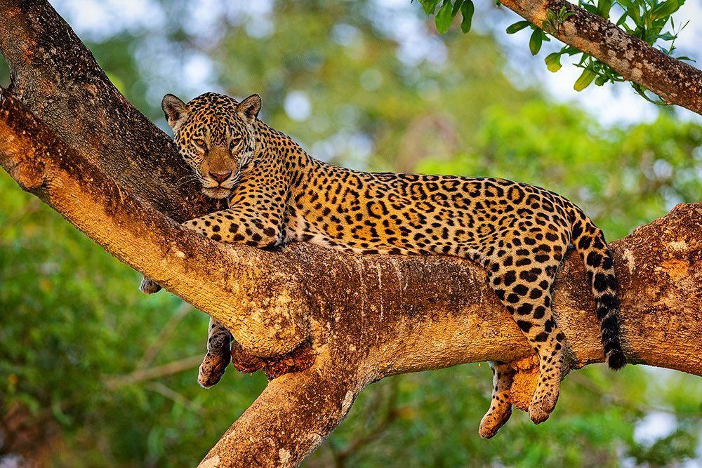

HÁBITAT DEL LEOPARDO
Los leopardos son animales que pueden adaptarse a distintos tipos de ambientes naturales. Se encuentran principalmente en África y algunas regiones de Asia, donde viven en lugares como selvas tropicales, bosques, montañas, sabanas y zonas rocosas. Esta capacidad de adaptación les permite sobrevivir incluso en áreas donde otros felinos no podrían hacerlo.
Uno de los aspectos más impresionantes del leopardo es su habilidad para camuflarse. Sus manchas oscuras se mezclan perfectamente con la vegetación, las sombras y las rocas, ayudándolo a esconderse tanto de sus presas como de otros depredadores. Gracias a esto, pueden acercarse sigilosamente sin ser detectados.

Los leopardos suelen vivir solos y marcan su territorio para evitar la presencia de otros leopardos. Durante el día descansan en árboles altos, cuevas o lugares ocultos, mientras que por la noche salen a cazar. Son excelentes trepadores y muchas veces suben sus presas a los árboles para protegerlas de hienas o leones.

Estos felinos necesitan espacios amplios con suficiente agua, vegetación y animales para alimentarse. Sin embargo, muchas de las áreas donde viven están siendo destruidas por la tala de bosques, incendios y expansión de ciudades. Esto provoca que los leopardos pierdan su hogar natural y tengan mayores dificultades para sobrevivir.
Actualmente, diferentes organizaciones trabajan en la protección de los leopardos y sus hábitats naturales. Cuidar estos ecosistemas es importante porque los leopardos ayudan a mantener el equilibrio de la naturaleza, controlando la población de otros animales y contribuyendo a la biodiversidad del planeta.